ADSR
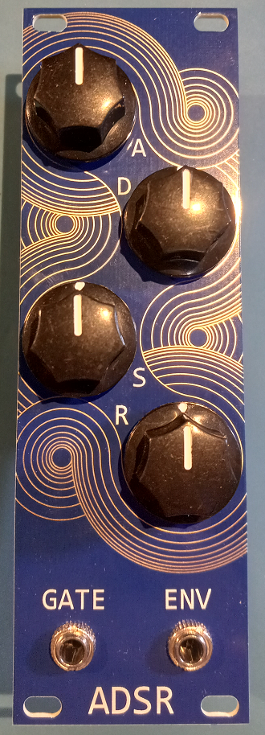This project was partly sponsored by PCBWay. Scroll to the bottom for comments on the quality of the PCBs they sent me (or click here).
Motivation
I've been slowly building a modular synthesizer for a few years now. It's a long term project becasue in order to have something that's minimally useful you need multiple modules, and each one is its own project. This module is an ADSR or an envelope generator, which makes a voltage waveform shaped like this:

Image from Wikipedia, CC BY-SA 3.0
A, D, S, and R stand for attack, decay, sustain, and release. The above image suggests that you should think of them in terms of periods of time (except for S), but I find it more intuitive to think of them as rates of increase or decrease.
In a synthesizer it's used to control the loudness of a note based on how long you hold the keyboard key down. This is done by feeding the note waveform into the input of a voltage controlled amplifier, whose amplification level is controlled by the ADSR.
Schematic
Modular synthesizers have been around so long that there's lots of reference schematics available for all the basic modules. I based this module on a schematic by Rene Schmitz from 1999, who was expanding on a design from a book written by Barry Klein in 1982. I had previously built this circuit on a breadboard several years ago and found that it worked well.

The full schematics can be downloaded here:
Motherboard Schematic (PDF)UI Schematic (PDF)
As a brief explanation, the BJTs condition the input Gate signal (see below waveforms), and the 555 timer provides voltages for the different sections of the envelope. The three diodes and their pots use these "section voltages" to charge and discharge a capacitor at the rate set by the pots at the correct times. The S pot is a bit unique in that it sets the voltage level that the D pot discharges the cap to.
I divided it into two PCBs, with all the core electronics on the motherboard and the pots and jacks on a UI board. There were a couple reasons to do this:
- The motherboard is 4 layers to accomidate good grounding and power planes. The UI board has to be a certain area to cover all the UI elements. Seperating them let me keep the more expensive 4 layer board small.
- It's easier to place components and route if you don't have to avoid the larger UI TH components.
- It's cheaper to replace just the UI board if a knob gets broken, or the motherboard if something gets shorted.
The downsides are that 100mil headers can be a bit expensive and an increase in assembly complexity.
Simulation
The main point of the simulation was to determine the values of the pots and capacitor in the RC circuit that shapes the output voltage. I didn't want to order a bunch of pot values or fool around with breadboards and TH resistors, so I simulated the circuit in LTspice. Here's the schematic I drew:
All the parts I needed were in the default library, which let me avoid importing anything. I set each pot value as its full value scaled by a parameter, and then one at a time I changed which parameter I used a .step command to vary.
Here's each node's voltage. The bottom plot shos the envelope shape.
Here's the stepped plots which show each pot at 20% rotation increments. I played with the pot and capacitor values, targeting what was in stock at Digikey and Mouser, until I found a something that gave a good range of adjustability.
A Pot. Note the linear spacing of the peaks.
D Pot. Note the non-linear spacing of the decay lines.
S Pot. Note the non-linear spacing of the sustain levels.
R Pot. Note the non-linear spacing of the release lines.
I pointed out the linear or non-linear nature of the above lines becasue one of the decisions I had to make was whether to use linear or logarithimic pots. It's nice if turning the pot a certain amount equals the same amount of adjustment at any point in its travel. With the R pot, for example, the simulation shows that it's more sensitive at the steeper end of the range. In other words, turning the pot slightly at that end will have a larger effect than turning it slightly at its other end.
One way to counteract this is to use a log pot instead of a linear pot. A log(arithmic) pot has a curved shape to its resistance vs rotation curve, so as you turn the pot its resistance increases first slowly then more quickly. This sort of cancels out the increased sensitivity so the adjustment you make over the whole rotation range is more even.
Unfortunately this was all moot because Digikey only had linear pots in stock, so that's what I ordered.
PCB
The main challenge for the PCB design was making sure they could interface with one another. The footprints for the jacks and pots on the UI board had to be in the same relative poistion as their mounting holes on the faceplate. I solved this by aligning the origin of the UI board footprints with the center of the faceplate hole, then copy and pasting coordinates from the UI board to the faceplate.
The signal headers that go between the motherboard and UI board had to have the signals in the same order, which I solved by labeling every signal on both boards, then visually checking that they were the same in the multiboard assembly.
Motherboard
I was anticipating having to debug so I added testpoints to every node, ones big enough to rest the tip of an oscilloscope probe in. I also added a hole I could clip the ground probe to.
I chose to use 4 layers:
| Components, Signal |
| Ground |
| Power, short Signal traces |
| Ground |
This put a ground reference plane next to every signal trace. I thought about using just two layers, but there would have been too many power traces crossing under signal traces.

UI Board
There's not much to say about this one other than I had to get the UI components in the right position. I did add a graphic of a cat:
 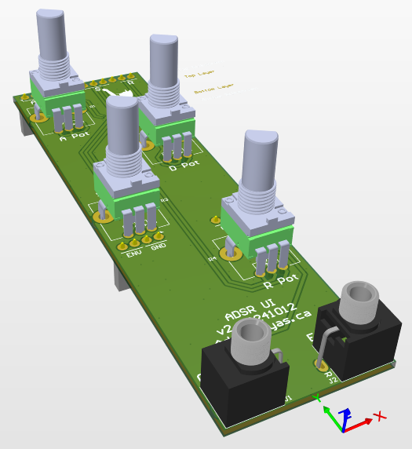
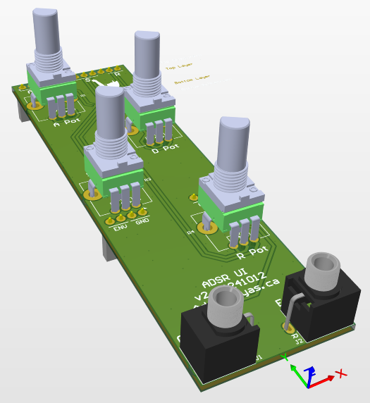
Faceplate
Since the PCBs were being sponsored by PCBWay, I wanted to do something that showed off thier manufacturing abilities that would be visable to the end user. I chose a pattern in the silkscreen that exposes the golden ENIG finish of the copper layer beneith it.
I ended up drawing the pattern in QCAD, then importing it as a DXF into Altium. See below for pictures.
Multiboard
Altium lets you import multiple PCBs into a Multiboard assembly in order to check that they align mechanically:
 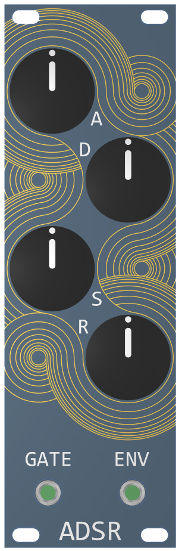
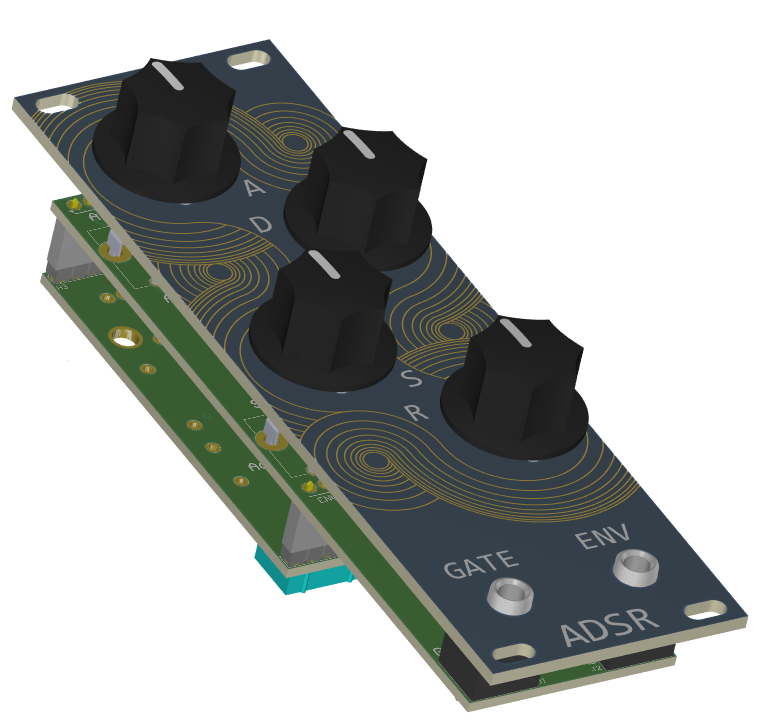
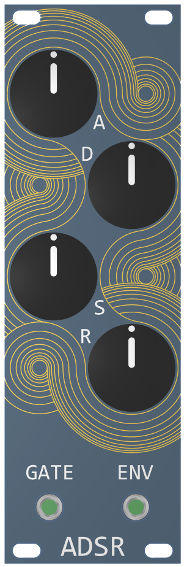
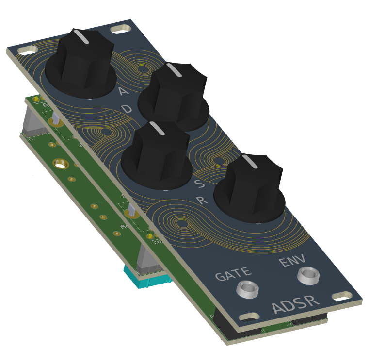


Mechanical
This module follows the eurorack standard, which mainly defines the size of the faceplate and what voltage rails are available. I had already researched this for previous modules and made a faceplate template that I used here to make sure it was the right size.
Asssembly
Assembly went without issue. The footprints I made were easy to solder to and there weren't any clearance issues.
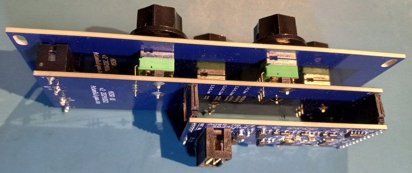 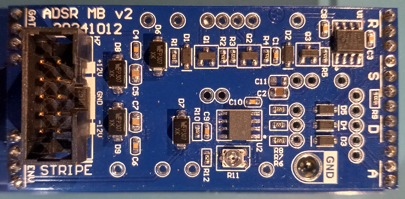Testing
I was fortunate in that the first module I assembled worked right away. There were no mistakes in my schematic or BOM, and my sodler joints were all good. Below are some screen captures from my oscilloscope. The yellow trace is the clock signal I fed into the Gate input. The blue trace is the envelope from the ENV output.
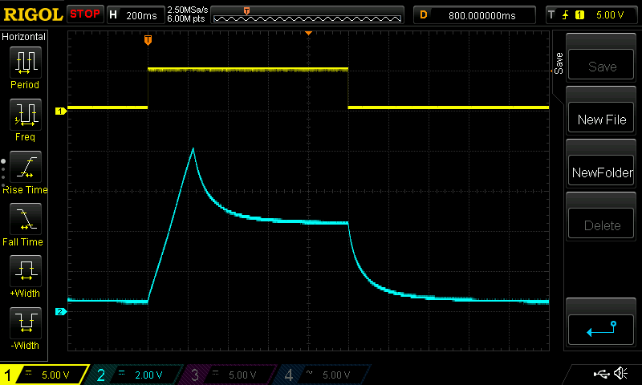A standard output.

A standard output, but with a sharper attack, higher sustain, and slower release.

The sharpest attack and release with the highest sustain produce a square wave.
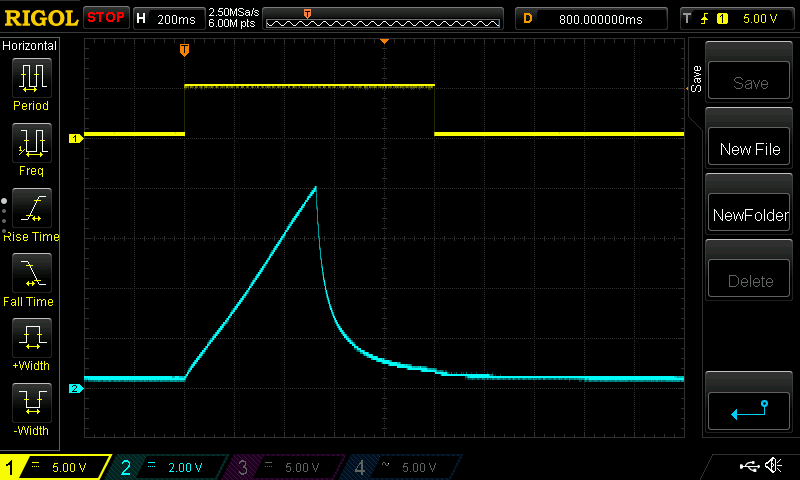A slow attack and no sustain produce a triangle/ramp wave.
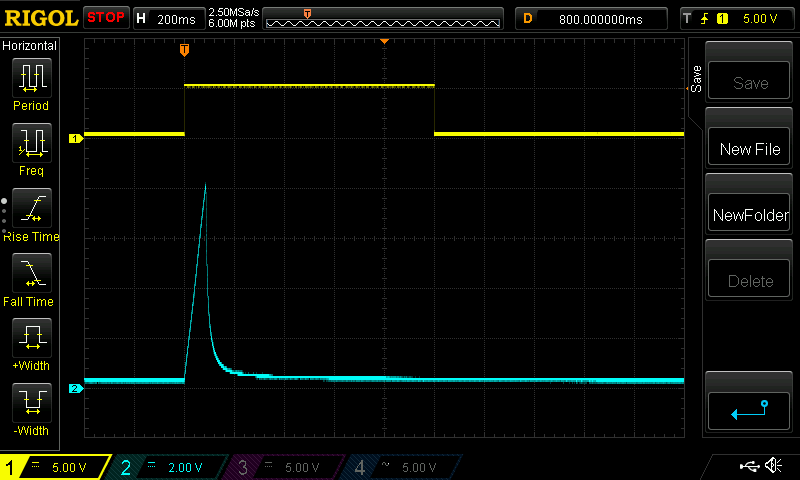A sharp attack and release with no sustain produce an impulse.
Conclusion
I think this project turned out pretty well. It will wait in my synth case until the other modules are ready.
PCBWay
This project was sponsored by PCBWay, who provided for free the bare PCBs. The only thing they asked me to do was talk about my impressions of the PCBs I recieved, so here's some pictures I captured from my microscope:

A SOT23 footprint. You can see the indents on the pads where they used
a flying probe to test for any unwanted continuity between all the seperate copper areas.
Flying probe machines are pretty cool. Here's a video showing one in action.

Arbitrary soldermask shapes show good definition. Points aren't rounded off.
I also included a font test on the UI board. Only the smallest text was starting to blur.
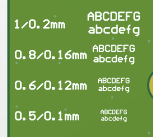 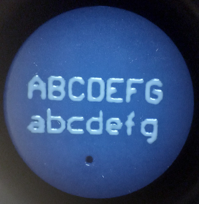Text: height = 0.6mm, stroke width = 0.12mm. Sufficiently legible.
Seperation between characters and strokes is clear.

Text: height = 0.5mm, stroke width = 0.1mm.
Letters and strokes start to bleed into each other.
One other detail that I appreciated was that the edge routing was smooth with no chatter or splinters, unlike some other boards I've received in the past.
Overall it was very easy to work with PCBWay and I'm happy with the quality of the boards they provided. I'd recommend them to anyone looking to have their own PCB designs manufactured.
Back to Projects